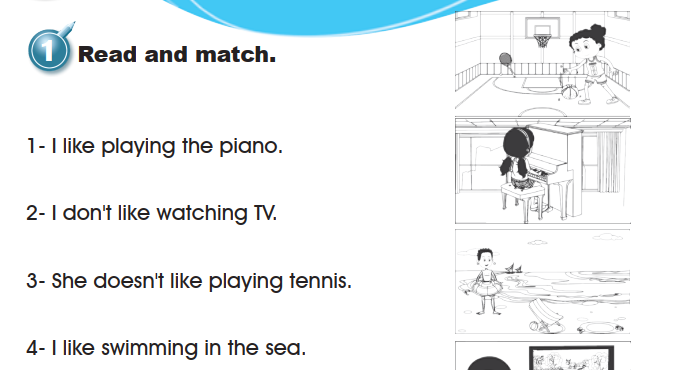
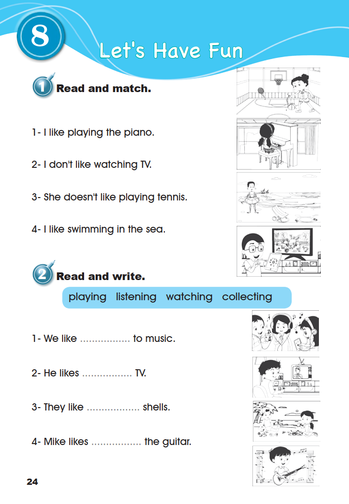
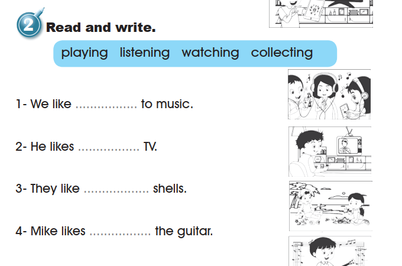
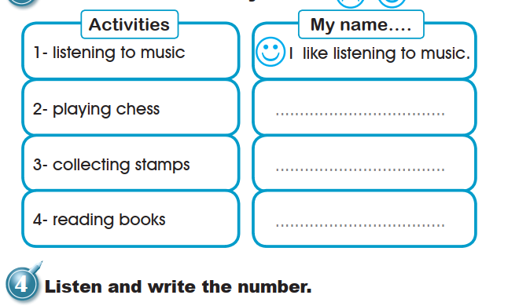
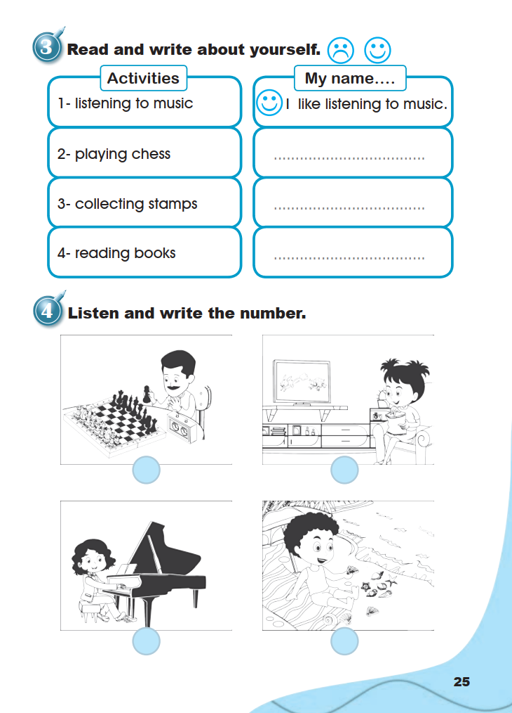
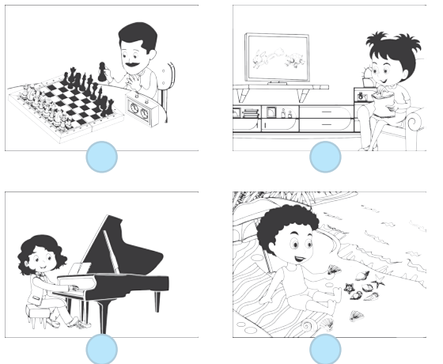
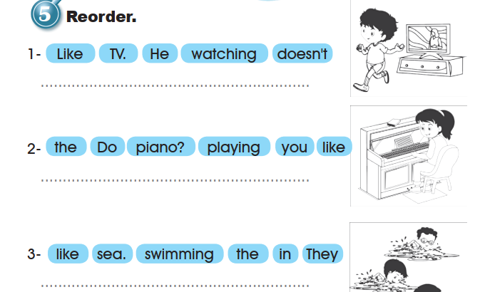
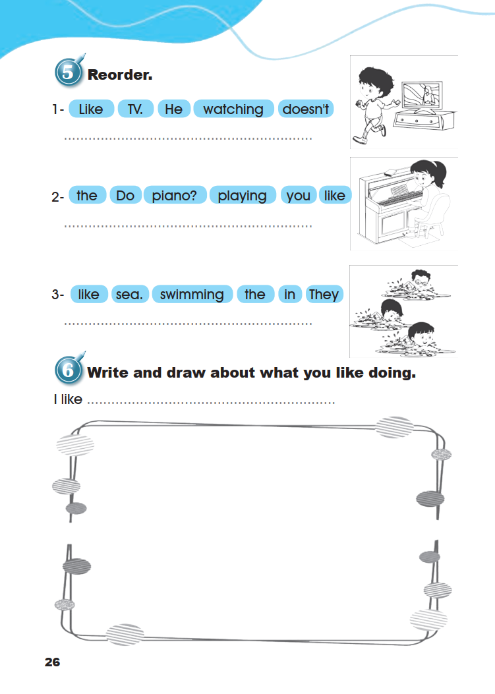
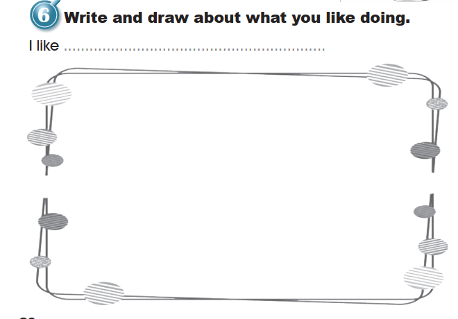

✦ ENGLISH FULL CURRICULUM
← Return to Grade 3 lessonsGRADE 3 · UNIT 1 · LESSON 8
Workbook
Let’s Have Fun · Workbook · pages 24–26. Printed exercises in source order.
Writing practice. Your answers are saved in this browser only, and nothing is marked automatically. Where the book prints no answer key, the model is labelled as inferred or as an example. Your own answer is never overwritten.
1. Read and match.

Open the source page · Workbook · p. 24
The original supplied scan, unchanged.

2. Read and write.

Open the source page · Workbook · p. 24
The original supplied scan, unchanged.
3. Read and write about yourself.

Open the source page · Workbook · p. 25
The original supplied scan, unchanged.

4. Listen and write the number.

Open the source page · Workbook · p. 25
The original supplied scan, unchanged.
5. Reorder.

Open the source page · Workbook · p. 26
The original supplied scan, unchanged.

6. Write and draw about what you like doing.

Open the source page · Workbook · p. 26
The original supplied scan, unchanged.